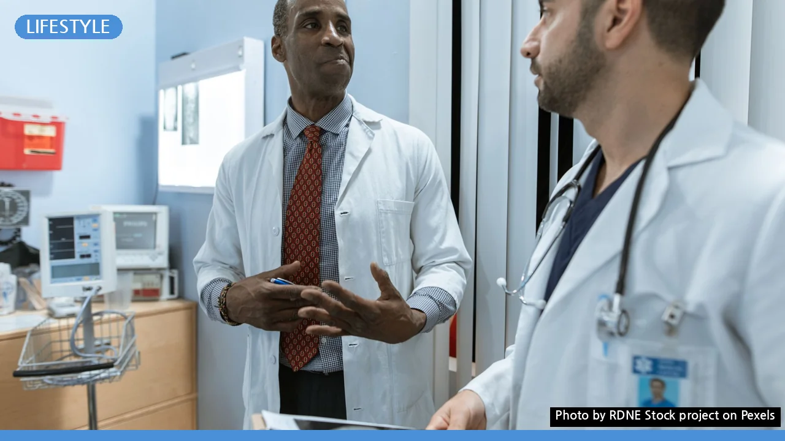
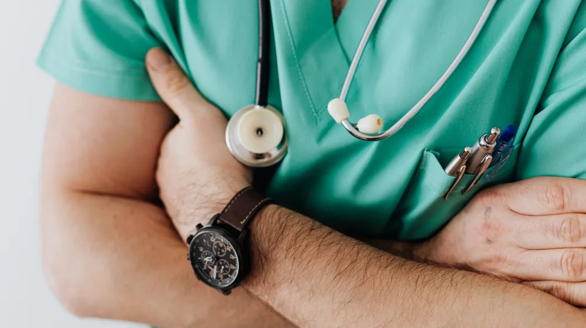

의료 공백의 숨은 영웅? 공중 보건 의사, 당신이 몰랐던 3가지 진실
사진: RDNE Stock project / Pexels (무료 이미지, 출처 표기)
급부상한 공중 보건 의사, 그들이 주목받는 진짜 이유

혹시 오늘 인터넷 검색창을 뜨겁게 달군 '공중 보건 의사'라는 단어를 보셨나요? 평범해 보이는 이 단어가 지금 대한민국 사회의 가장 뜨거운 감자로 떠오른 의료 공백 사태와 맞물려 엄청난 주목을 받고 있습니다. 과연 그 이면에는 어떤 사연이 숨어 있을까요? 오늘 우리는 의료의 최전선, 그러나 대중의 시선에서는 한 발짝 떨어져 있던 '공중 보건 의사'의 세계로 여러분을 초대합니다. 그들이 누구이며, 왜 지금 이토록 중요해졌는지, 그리고 우리가 미처 몰랐던 놀라운 진실 3가지를 지금부터 함께 파헤쳐 보겠습니다!
최근 대한민국을 강타한 의료 대란 속에서, 사람들의 시선은 자연스레 '의료 공백'을 메울 수 있는 존재를 찾기 시작했습니다. 그 해답 중 하나로 급부상한 것이 바로 '공중 보건 의사(이하 공보의)'입니다. 전공의들의 수련 병원 이탈로 발생한 의료 공백을 최소화하기 위해, 정부는 농어촌 등 의료 취약지에서 근무하던 공보의들을 대형 병원 응급실, 중환자실 등으로 투입하기 시작했습니다. 마치 조용히 자신의 자리를 지키던 '숨은 영웅'이 위기 상황에 소환된 것처럼 말이죠. 이들은 단순히 병역 의무를 이행하는 것을 넘어, 대한민국 의료 시스템의 '비상 구원투수' 역할을 톡톡히 해내며 우리 사회에 없어서는 안 될 존재임을 다시 한번 증명하고 있습니다.
도시 의사? 시골 의사? 오해와 진실 사이
그렇다면 공보의는 정확히 어떤 사람들일까요? 흔히 '시골 의사'로 불리기도 하지만, 사실 그 역할과 의미는 훨씬 깊고 넓습니다. 공보의는 의과대학을 졸업하고 의사 면허를 취득한 후, 병역 의무를 대신하여 3년간 농어촌 등 의료 취약 지역의 보건소, 보건지소, 의료원 등에서 공공 보건 업무에 종사하는 의사를 말합니다. 이들은 단순히 질병을 치료하는 것을 넘어, 지역 주민들의 건강 증진과 질병 예방을 위한 다양한 공중 보건 사업을 수행합니다.
도시의 대형 병원 의사들이 고도화된 전문 의료 서비스와 첨단 장비를 통해 특정 질환을 치료한다면, 공보의들은 지역 주민의 가장 가까운 곳에서 감기, 고혈압, 당뇨 등 만성 질환 관리, 예방 접종, 건강 검진, 보건 교육 등 1차 의료 서비스의 핵심 축을 담당합니다. 때로는 응급 환자 발생 시 가장 먼저 현장에 출동하여 초기 처치를 담당하고 이송을 돕는 등, 그들의 손길은 지역 주민의 삶에 깊숙이 닿아 있습니다.
의료 취약지대의 등대, 그들의 헌신과 희생
상상해보세요. 망망대해의 작은 섬, 혹은 버스도 하루에 몇 번 오지 않는 산골 마을에 갑자기 위급 환자가 발생했습니다. 가장 먼저 달려와 손을 내밀어 주는 사람이 누구일까요? 바로 공보의입니다. 의료 인프라가 절대적으로 부족한 곳에서 공보의는 그 지역 유일의 의사이자 보건 전문가, 때로는 심리 상담사의 역할까지 겸하며 '의료 취약지대의 등대'가 되어줍니다.
저도 취재를 통해 들었던 놀라운 이야기가 있습니다. 한 섬마을 공보의는 태풍으로 배가 끊겨 응급 환자 이송이 불가능해지자, 직접 전화로 상급 병원 의사와 소통하며 섬 안에서 생사를 오가는 환자를 극적으로 살려냈다고 합니다. 또 다른 공보의는 홀로 사는 노인들의 집을 일일이 방문하여 건강을 살피고, 마음의 병까지 어루만져 주는 '주치의' 역할을 자처하기도 했습니다. 이처럼 그들은 열악한 환경 속에서도 묵묵히 자신의 역할을 수행하며, 대한민국의 의료 사각지대를 지켜내는 가장 든든한 버팀목이 되고 있습니다.
공보의, 누가 되고 어떻게 배치될까?
공보의는 의사 면허를 가진 모든 남성이 될 수 있는 것은 아닙니다. 병역법에 따라 병역 의무를 대체하는 '전문연구요원 및 산업기능요원의 편입 및 복무 등에 관한 규정'에 따라 선발됩니다. 보통 의과대학 졸업 후 인턴 과정을 마치거나, 혹은 바로 지원하는 경우도 있습니다. 선발된 공보의들은 중앙정부 및 각 시·도의 보건 의료 수요를 종합적으로 고려하여 배치됩니다.
그렇다면 이들이 일반적인 병원 의사들과는 어떻게 다를까요? 아래 표를 통해 그 차이점을 한눈에 비교해보세요.
우리가 미처 몰랐던 공보의들의 숨은 고충
빛이 강하면 그림자도 짙은 법. 헌신적인 공보의들의 이면에는 우리가 미처 몰랐던 깊은 고충이 숨어 있습니다. 도시 의사들이 첨단 장비와 동료들의 지원 속에서 진료한다면, 공보의들은 때로 홀로 덩그러니 놓인 환경에서 모든 것을 감당해야 합니다. 한정된 의료 장비, 부족한 인력, 전문의의 부재로 인한 심리적 부담감은 상당합니다. 게다가 진료 외에도 행정 업무, 주민과의 유대 관계 형성 등 다양한 역할을 요구받기도 합니다.
특히 최근 의료 공백 사태로 인해, 본래의 근무지였던 의료 취약지를 떠나 대형 병원으로 긴급 투입되는 상황은 공보의들에게 새로운 종류의 부담을 안겨주고 있습니다. 낯선 환경, 과중한 업무, 그리고 전공의들과는 다른 복무 규정으로 인한 처우 문제까지, 이들의 헌신 뒤에는 남모르는 희생과 외로움이 자리하고 있습니다. 이는 단순한 '의료 인력'을 넘어 한 사람의 청년으로서 감당하기 쉽지 않은 무게입니다.
의료 시스템의 균형추, 미래를 위한 제언
오늘날 '공중 보건 의사'라는 키워드가 급부상한 것은 비단 현재의 의료 공백 사태 때문만은 아닙니다. 이는 우리 사회가 그동안 간과했던, 혹은 당연시했던 의료 취약 지역의 중요성과 그곳을 지켜온 이들의 존재 가치를 다시금 깨닫는 계기가 되어야 합니다. 공보의들은 대한민국의 의료 시스템이 한쪽으로 기울지 않도록 균형을 잡아주는 '숨은 균형추'와 같습니다.
이들의 헌신이 일회성 위기 해결에 그치지 않고 지속 가능한 의료 시스템의 근간이 되기 위해서는 보다 체계적인 지원과 합당한 처우가 반드시 필요합니다. 의료 현장 복귀 후 안정적인 정착을 위한 지원, 열악한 근무 환경 개선, 그리고 이들의 전문성을 꾸준히 개발할 수 있는 기회 제공 등 장기적인 안목으로 공보의 제도를 재정비해야 할 때입니다. 그들의 작은 헌신 하나하나가 모여, 대한민국 국민 모두가 건강한 삶을 누릴 수 있는 튼튼한 의료 안전망을 만들어갈 것입니다. 지금이야말로 우리가 그들에게 진심 어린 격려와 관심, 그리고 현실적인 대책을 마련해 줄 때입니다.
🔗 이 글도 함께 보면 좋아요: 부부, 검색어 1위 대반전! 대한민국 결혼관 충격적 변화의 실체